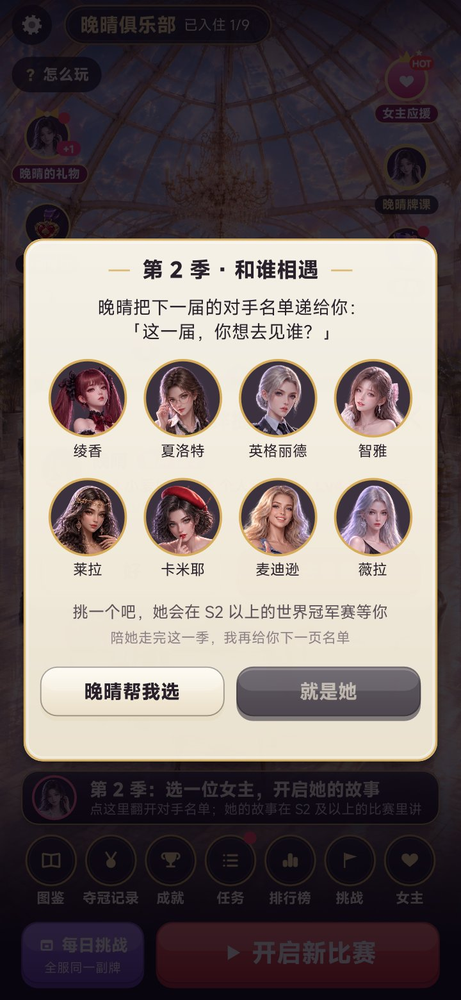
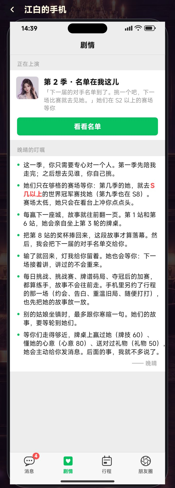
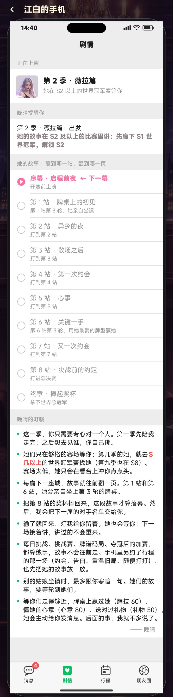

剧情触发：手机新增「剧情」页 + 没选女主时的引导
11-14 · 截图都是游戏本体实机渲染 · 还没有提交审核，等你确认
手机「剧情」页：由晚晴（俱乐部老板）亲口交代
「晚晴的叮嘱」，落款「—— 晚晴」
- 这一季，你只需要专心对一个人。第一季先陪我走完；之后想去见谁，你自己挑。
- 她们只在够格的赛场等你：第几季的她，就去 S 几以上的世界冠军赛找她（第九季也在 S8）。赛场太低，她只会在看台上冲你点点头。
- 每赢下一座城，故事就往前翻一页。第 1 站和第 6 站，她会亲自坐上第 3 轮的牌桌。
- 把第 8 站的奖杯捧回来，这段故事才算落幕。然后，我会把下一届的对手名单交给你。
- 输了就回来，灯我给你留着。她也会等你：下一场接着讲，讲过的不会重来。
- 每日挑战、挑战赛、牌谱码局、夺冠后的加赛，都算练手，故事不会往前走。手机里另约了行程的那一场（约会、告白、重温旧局、随便打打），也先把她的故事放一放。
- 别的姑娘坐镇时，最多跟你寒暄一句。她们的故事，要等轮到她们。
- 等你们走得够近，牌桌上赢过她（牌技 60）、懂她的心意（心意 80）、送对过礼物（礼物 50），她会主动给你发消息。后面的事，我就不多说了。
故事进度：按章节名列出，不再是规则条目
- 晚晴篇用剧本里的章名：第 1 章 · 外卡、第 2 章 · 消失的冠军、第 3 章 · 五年前……每章下面一行小字写在哪座城、赢哪一轮
- 女主篇用场景名：序幕 · 启程前夜 → 第 1 站 · 牌桌上的初见 → 第 2 站 · 异乡的夜 → 第 3 站 · 散场之后 → 第 4 站 · 第一次约会 → 第 5 站 · 心事 → 第 6 站 · 关键一手 → 第 7 站 · 又一次约会 → 第 8 站 · 决战前的约定 → 终章 · 捧起奖杯
- 已经看过的章节标「已上演 · 可在她的房间「故事」里重温」，下一章标「← 下一幕」
其他地方的文字
- 页面分区：正在上演 / 晚晴提醒你 / 她的故事 · 赢到哪一站，翻到哪一页 / 晚晴的叮嘱
- 晚晴季：「这一届世界冠军赛，我陪你从第一站走到最后。」；女主季：「她在 S2 以上的世界冠军赛等你」
- 没选下一位：「第 2 季 · 名单在我这儿」「下一届的对手名单到了。挑一个吧，下一场比赛就去见她。」，按钮「看看名单」
- 选人弹窗：「挑一个吧，她会在 S2 以上的世界冠军赛等你」「陪她走完这一季，我再给你下一页名单」
- 剧情关闭时：「故事暂时合上了 · 想她们了，就去设置里把剧情打开，我们接着讲。」
什么时候会提示选人
- 每次启动游戏进大厅，自动弹出对手名单（有别的弹窗就等它关掉）
- 点「开启新比赛」时先弹一次；选好后自动把 S 调到她的赛场
- 手机亮红点；点大厅底部的目标栏也能直接打开名单



